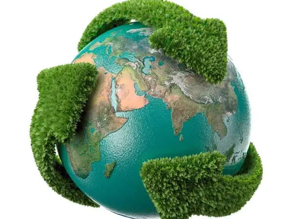
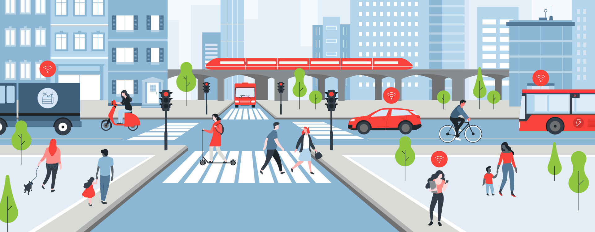
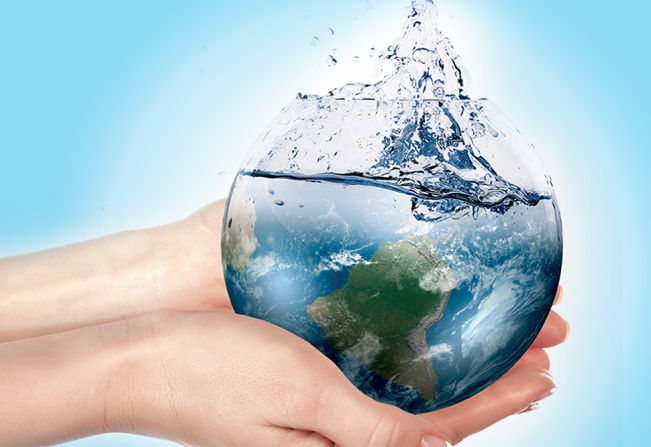
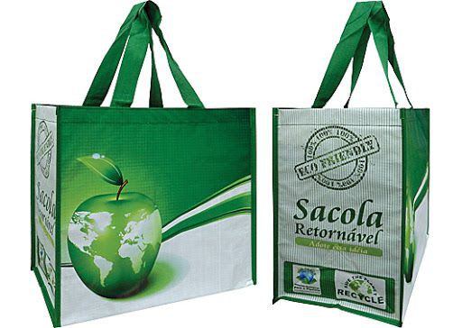

Reduzir, Reutilizar e Reciclar!

Nos ensinam nas escolas desde pequenos a importância da "Política dos três R", contudo, acredito que nunca se aprofundaram muito nesses fundamentos, devido ao fato de sermos muito novos para entender a complexidade do meio ambiente.
A começar pela redução: Bem, como deve sre óbvio, a redução é necessária para que as ruas/cidades não fiquem lotadas de lixo pelos cantos, pois não temos pessoas o suficiente trabalhando na coleta de lixo e se ele estivesse espalhado por aí, atrairia ratos, baratas, gatos e cães, além de gerar diversas bactérias nas ruas. Consequentemente desestabilizando o meio ambiente e tornando as cidades inabitáveis para nós.
Agora, partindo para a reutilização: O mercado capitalista e a implementação do fordismo e toyotismo na sociedade, fizeram com que todos os produtos que consumimos e/ou utilizamos, sejam diariamente descartados. Possuímos como maior exemplo os recipientes de plástico, que possuem uma forma de reutilização, contudo, normalmente são apenas descartados pelas pessoas. Então é importante frizar que a reutilização de produtos é essencial para a manutenção do meio ambiente.
Economia de Energia

A depender do país em que você vive, os custos de energia elétrica podem ser muito caros, e com esse pensamento em mente que se criou a captação de energia solar.
Apesar dos gastos altíssimos com os painéis de energia solar, instalação e manutenção dos mesmos, se o uso de energia solar fosse aplicado em massa ao redor do mundo, reduziria bastante a quantidade de áreas em que houve alguma intervenção humana, por exemplo as regiões em que as hidrelétricas ficam. Através do uso de energia solar, esses lugares poderiam ser demolidos ou reaproveitados para algo mais benéfico para a natureza.
Transporte Sustentável

É notável que os transportes comuns que utilizamos, tais como carros e ônibus, produzam uma quantidade absurdamente alta de gases poluentes, consequentemente impedindo as cidades populosas de possuírem um ar limpo e puro, logo, é espero que os meios de transportes passam a utilizar de alguma energia limpa ao invés de combustíveis.
Maneje sua água!

O gasto de água hoje em dia não é brincadeira, todas as pessoas no mundo precisam de água, mas nem todas sabem usar com moderação. A economia de água é de extrema importância, pois é um recurso que ao longo do tempo vai se tornar escasso devido ao uso constante do mesmo diariamente.
Sacolas reutilizáveis

Fazendo relação com a regra da reutilização de objetos, a sacola plástica é objeto de grande polêmica atualmente, devido ao fato de que foi projetada para um uso descartável e não é um recurso biodegradável, assim fazendo com que a maioria delas vá parar no meio do mar e acabe prejudicando as vidas marítimas alheias. Então deveríamos fazer o possível para não utilizar sacolas plásticas ao fazer nossas compras no mercado, como por exemplo, comprar